Tms Postにはメイン画面以外に各種設定用の画面がいくつか用意されています。＜設定＞ボタンと＜キャンセル＞ボタンは全画面で共通の操作になります。＜設定＞ボタンをクリックすると設定が有効になり、＜キャンセル＞ボタンをクリックすると設定がキャンセルされます。以下に操作概要を説明します。
| 項目 | イメージ | 説明 |
|---|---|---|
| タブ | 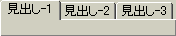 | 見出しの内容の画面を表示させます。 |
| コンボボックス | 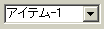 | 右側の矢印をクリックすると選択項目が表示されます。 |
| テキストボックス | 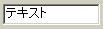 | 値を入力するボックスです。 |
| チェックボックス | チェックがある場合その機能を有効にします。 | |
| コマンドボタン | 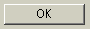 | 「OK」や「キャンセル」などを処理するボタンです。 |
| ツリービュー | 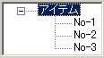 | 項目を階層表示します。 |
| オプションボタン | 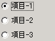 | オンとオフの2つの状態が切り替わるオプションを選択できます。 |
| リストボックス | 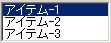 | 項目をリストに表示します。 |
| リストビュー | 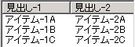 | 見出しを付けて項目をリストに表示します。 |
<ポップアップメニュー>
ポップアップメニューは、よく使うコマンドが収められたメニューです。ポップアップメニューは、マウスの右ボタンをクリックすると表示されます。
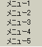
<[ファイル参照]ダイアログボックス>
ファイルの選択を行うためのダイアログボックスです。
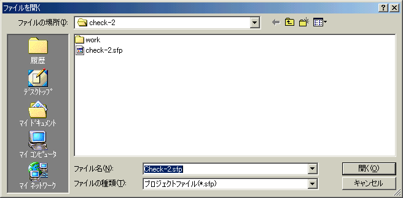
<[フォルダ参照]ダイアログボックス>
フォルダの選択を行うためのダイアログボックスです。
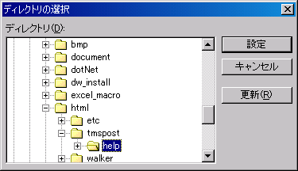
<[フォントの設定]ダイアログボックス>
フォントの設定を行うためのダイアログボックスです。
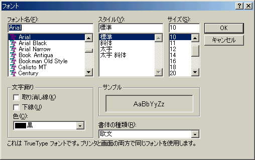
<[色の設定]ダイアログボックス>
色の設定を行うためのダイアログボックスです。
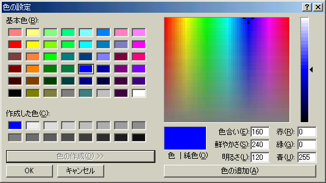